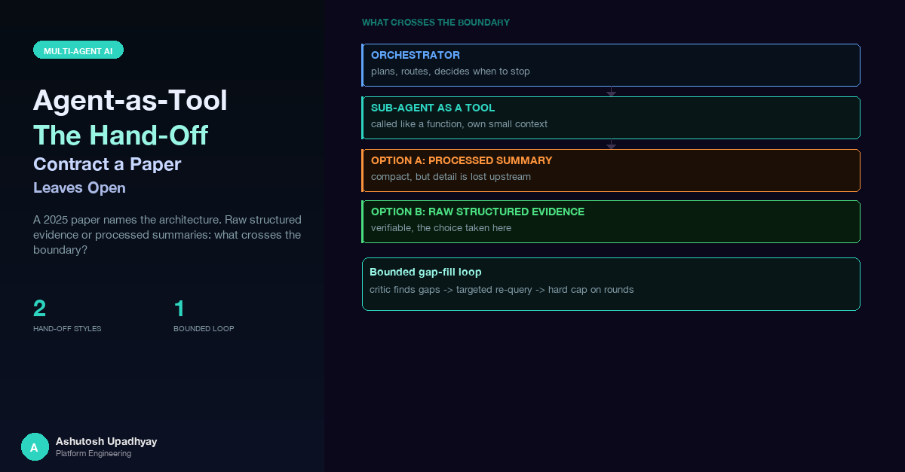

A hierarchical planner-and-toolcaller design is sound. The part that decides whether it tells the truth is what one agent hands to the next.
A scientist asked our research agent about a screening result and got back "no data." The data existed. A tool had compacted its own output and silently dropped every result family in which 0% of the measurements were positive, so the answer had nothing to say about them. "No data" and "0%" are very different findings, and the agent reported the wrong one.
The same investigation found more. A table of per-concentration rows arrived as unlabelled positional arrays that kept only the top similarity score, and the model read it as "inactive at all concentrations" when one concentration was clearly active. The single agent had actually written the correct report, but a grounding check blocked it, because the check only saw this turn's tool results. The turn escalated into the multi-agent pipeline, where the first stage rebuilt the request from a short slice of chat history, invented one compound identifier (think CMPD-0001 appearing from nowhere), dropped another, and passed a flag that skipped the tool's own identifier validation. The reviewer, which saw only the previous stage's prose, passed all of it.
Every hop in that chain was an agent trusting another agent's summary. The architecture gave each agent a paraphrase to trust and nothing to check it against.
Around the same time I read a short July 2025 paper, Agent-as-Tool: A Study on the Hierarchical Decision Making with Reinforcement Learning (Yanfei Zhang, arXiv 2507.01489), that gives this architecture a name and makes a clean argument for it. This post is about what the paper proposes, how much its evidence supports, and the design decision where our production system went the other way: what, exactly, a reasoning agent should receive from an agent that holds the tools.
The paper splits a question-answering agent into two parts. A Planner does the reasoning: it thinks in a <think> block, then emits a sub-query inside <tool_calling> tags. A Toolcaller is a separate chat agent (a CAMEL-style agent on GPT-4o-mini) that owns the web-search tool. It takes the Planner's query, runs the search, possibly several times, and returns a processed observation in <obs> tags. The Planner reads that observation and either asks again or answers. The claim is that a reasoner works better on a cleaned, structured observation than on raw search snippets full of unrelated symbols and details.
The paper's own example shows the idea well. The question asks where the mother of a certain German prince was born. The Search-R1 baseline reads raw snippets, sees a passage about the prince's marriage to a princess, takes the wife for the mother, and follows the wrong person to the wrong birthplace. The hierarchical version asks the Toolcaller who the mother is, gets back a short processed observation naming her, asks where she was born, and answers correctly.
The Planner is a Qwen-2.5-7B-Instruct model, trained with GRPO, a group-based policy-gradient method (the paper expands the acronym in its own way). Training is deliberately tiny: 60 steps, each with 3 questions and 12 rollouts per question, which is 180 training questions, with at most 10 rounds of tool calling per rollout. The reward is the answer's F1 score if the output is well formatted and −2 otherwise. One detail matters for the rest of this post: the paper applies observation masking, replacing the <obs> spans with a padding token during training so the Planner is not credited or penalised for text the Toolcaller wrote. That is a credit-assignment device inside the RL loss. It does not hide anything from the Planner at inference time, and I will come back to why that distinction matters.
The abstract reports 63.2% exact match and 75.2% cover exact match on Bamboogle, beating Search-R1 by 4.8 and 3.2 points. Those numbers are in the tables. So is the rest of the picture, and I think a fair reading needs all of it. Here are the exact-match scores from Table 1 against the strongest baseline:
| Dataset | Agent-as-tool (Instruct) | Search-R1 + web search |
|---|---|---|
| Bamboogle | 63.2 | 58.4 |
| HotpotQA | 37.2 | 47.2 |
| 2WikiMultiHopQA | 44.6 | 52.4 |
| MuSiQue | 18.4 | 20.8 |
On exact match the hierarchical agent trails Search-R1 on three of the four datasets. The headline win is Bamboogle, and only Bamboogle. The paper says as much in its own text: Search-R1 keeps the best exact-match score on the other three.
The cover-exact-match metric, where the hierarchical agent does better on three of the four datasets, deserves a note. Cover exact match counts an answer as correct if it contains the gold string. That is a reasonable metric, but it rewards longer answers more easily than exact match does, so a gap in CEM is weaker evidence than the same gap in EM.
Bamboogle is also small. Every Bamboogle score in the paper is a multiple of 0.8, which is consistent with a 125-question test set (the paper does not state the size). If that holds, the 4.8-point margin is about six questions, and the 3.2-point gain from reinforcement learning is about four. These are points, not percent of anything larger, and a handful of questions can move them.
Where does the gain come from? It depends on the baseline you pick. Against the CAMEL agent with web search, which is a single GPT-4o-mini agent calling search directly, with no Planner at all, most of the improvement is present before any RL: 51.2 exact match for that baseline, 60.0 for the untrained hierarchical version, 63.2 after RL. Against Search-R1, the untrained version is only 1.6 points ahead on exact match and 0.8 points behind on cover exact match, so RL supplies 3.2 of the 4.8-point margin. One more design fact belongs in this reading: the hierarchical setup adds a second model, GPT-4o-mini, that reads search results on behalf of a 7B planner. Search-R1 has no such reader. Part of the gain may therefore come from having a stronger model read the raw results rather than from the hierarchy itself. The paper does not include an ablation that separates the two.
The training curves are modest too. The Figure 2 caption discusses the loss stabilising after about 30 steps. The average reward, which is what the method optimises, moves mostly between about −1.5 and −0.75 across all 60 steps with no clear upward trend.
My read: the architectural idea is sound and well motivated, and the Bamboogle result is a reasonable first signal. The reinforcement-learning evidence is thin, which the paper's own scale (180 questions, one small model) makes unsurprising. The useful thing to take from it is the separation of concerns, and the interesting engineering question is what the interface between the two halves should carry.
Our research agent is a four-stage pipeline described in an earlier post, so here is only the shape. Fixed rules route explicit research requests to the pipeline and identity or inventory questions to a single agent. For everything else a small classifier model (Haiku 4.5, a few output tokens, temperature zero) chooses, defaulting to the pipeline when uncertain. The pipeline then runs a Scout (Sonnet 5.5, the main retriever, holding the data tools), an Analyst (Sonnet 5.5, statistics and scripts), a Synthesizer (Opus 5.5, writes the answer) and a Critic (Opus 5.5, reviews it). Each stage is its own HTTP service behind a circuit breaker, and state-changing actions are blocked by a before-tool-call hook until the Critic has reviewed the draft.
The Scout is the closest thing we have to the paper's Toolcaller. But the map is not clean. Several stages hold tools: the Analyst has its own, the Synthesizer has a few, and the Critic can run its own knowledge-graph and literature checks, which are merged into the evidence tagged as the reviewer's. There is no pure Planner that only thinks and no pure Toolcaller that only fetches. The useful comparison is not a stage-for-stage match but the interface: what crosses each boundary.
The paper's instinct, that a reasoner should not drown in noise, shows up in several places in our design, each a deliberate limit on what a stage sees.
Each is a decision about what a stage does not need to see, in the spirit of the paper's view that cleaner inputs help reasoning.
Here is the design choice the paper leaves open. In the paper, the Toolcaller returns processed observations: its own summary of what the search returned. The Planner never sees the raw snippets. For web search, where results are noisy and the end product is a short factual answer, that is a sensible trade. For a research agent whose answers are tables, counts and statistics that a scientist will act on, a summary is a lossy, unverifiable layer. Every failure in the cold open was an agent trusting one.
So the Scout's contract is not "return an answer." It is "return evidence." Its prompt tells it to return raw data and not to summarise it. And every sub-agent now returns the same three things: its text, the list of tools it called, and a list of structured tool results. Each result entry carries:
{
"tool": "query_assay_results",
"input": {"compound": "CMPD-0001", "limit": 500},
"output": "...",
"status": "success",
"truncated": false,
"output_truncated": false,
"ids_never_seen": [],
"stored_ref": null
}Error results are kept, not dropped. An empty or failed call is evidence too, and a reviewer who cannot see that a source was tried and failed cannot tell it from a source nobody tried. A fixed character budget for the whole set of results is split evenly across calls with a floor per call, so a single large result cannot starve the others (the mechanics of in-flight accumulation are in an earlier post). The Analyst receives the full Scout result, and the Synthesizer receives it too, apart from the prose cut above. The Critic receives the uncut Scout result, the Analyst's result, the user's prompts and earlier turns' tool results.
Here is how that compares with where we started:
| Before | After | |
|---|---|---|
| What a stage captured | Tool name and result only | Tool, input, output, status, truncation flags, identifiers never seen, stored-result pointer |
| Errors | Dropped | Kept |
| What the Critic saw | The Scout's prose | Structured results with inputs, plus the prose |
| What the Synthesizer saw | The Scout's prose | Structured results with inputs, plus the prose |
| Review material | The prose alone | Tool skills attached automatically when exactly one skill is linked to a tool, plus per-tool review checklists |
I would describe the change as moving from processed summaries toward raw structured evidence: the stage that holds the tools returns evidence, and the stages that reason get both its prose and the structured results. The prose is still useful, since it is where the Scout notes what looked odd. It just stops being the only thing the reviewer can check.
One rule in the Scout's prompt does a lot of work. In paraphrase: use the true total for every count, never the number of rows that happened to be inline; and pass through the download link, the true total, the truncation flag, any export error and any notes verbatim, at the very top of the output, before any table or summary. The Synthesizer's prompt carries the matching rule. We added the Synthesizer half first and an advisor review pointed out that it could never fire, because the link had been paraphrased away two hops earlier. A rule about a value is only as good as the hand-off that delivers the value intact. This is also where large results go: anything too big to inline is exported by reference, and the true total travels with it (the counter-is-not-a-count trap is covered in this post).
A related hand-off is settings. A stored skill, written for a different client, told the model to always switch a certain option on. The tool hardcoded it off. The agent's reply reported the option as on, because the model trusted the skill text it had read and not the request the tool actually sent. The fix has four parts: the tool echoes the settings it effectively applied, the deterministic report renders what was sent, every prompt that can answer carries the rule "state settings only from the tool result", and a post-deploy check compares what the report says with what was sent. The lesson generalises. Whenever a tool and its documentation can drift, the tool's own echo is the only evidence a reviewer can rely on.
In the paper, the Planner can loop: think, call the Toolcaller, read the observation, repeat, up to a limit of ten rounds. Our pipeline for a long time had no such loop. A Critic verdict of "needs revision" re-ran only the Synthesizer, on the same evidence. If the Critic said a source was available but never queried, the revision could not fetch it, because the writer holds no retrieval loop and the Scout had already finished.
We measured how often that mattered. Across a sample of Critic reviews, roughly a quarter to 30% named a source that was available and never queried.
The gap-fill loop closes this, with bounds instead of an open-ended cycle:
The Analyst is not re-run; the revision works from the merged evidence. The flag for this loop is on in production. The point here is the shape: the paper's loop bound is a count of tool rounds, and ours is a count of gaps, a time budget and a single re-review, which fits a pipeline where each round is a multi-minute service call.
When the first failure landed, the tempting fixes were all specific to the tool that failed. We rejected them, and the reason is a design principle worth stating: the platform is agentic, so the fix should be to give the agents the facts they lacked, not to add rules that approximate judgment. The question for any agent-quality bug is which fact the agent was missing (data it never saw, context that was lost, a reviewer checking prose and not data), and whether a fix at that level helps every tool.
Three rejected options illustrate it:
What shipped instead was platform-wide: the classifier sees recent turns, structured results go to the Synthesizer and the Critic, writes happen only after review, the first stage and escalations get real session context plus a digest of earlier tool calls, and the grounding check sees earlier turns' tool results. The tool-level data fixes stayed, because they are correctness and not routing: every result family kept, labelled columns, sorting, missing identifiers reported, and the tool validating its own inputs.
| Agent-as-tool (paper) | Our research pipeline | |
|---|---|---|
| Who reasons | A trained 7B Planner | Synthesizer and Critic on Opus 5.5, with the Analyst on Sonnet 5.5 for statistics |
| Who retrieves | A Toolcaller agent that wraps web search | The Scout is the main retriever; the Analyst, Synthesizer and Critic hold a few tools of their own |
| What the reasoner sees | Processed observations | Raw structured evidence plus the Scout's prose |
| Training | GRPO on the Planner | Prompt and skill changes; no model training |
| Verification | None in the architecture | An adversarial Critic that sees the evidence |
| Loop bound | Up to 10 rounds of tool calling | At most 3 gaps, one re-review, a time budget, no second loop |
The paper closes with a direction I find the most interesting part: making the Planner a tool orchestrator that decides dynamically which agent or tool to assign, instead of a fixed assignment. Our routing is still largely fixed: rules, a small classifier, and a pipeline order that is the same for every research question.
The natural next step is outcome-driven orchestration, where the choice of which sub-agent or tool to involve comes from accumulated Critic verdicts and not from a hand-written table. For each kind of question, which stages added value, which gaps the Critic kept finding, which routes produced a clean pass on the first review?
The paper's own answer to "how do you learn that" is reinforcement learning, and there is a practical constraint on copying it. The Claude models we run cannot be RL-tuned on Amazon Bedrock, as far as I can tell: Bedrock's reinforcement fine-tuning covers other model families. That is a design constraint, not a complaint, and it points at what we do have. Reviewer verdicts are a structured, per-stage training signal that arrives for free with every answer. Used to tune routing rules and prompts, and measured per path against a baseline, they give a feedback loop that does not need gradient updates. The Critic would stop being only a gate at the end and start informing where the next question goes.